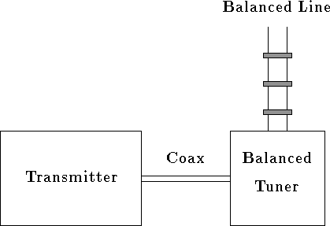
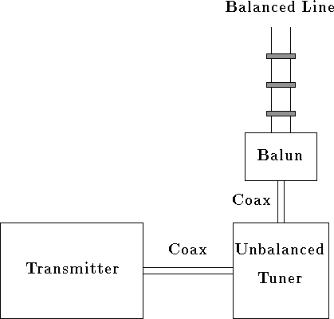

Next: 2 A two wire
Up: Putting a Balun and
Previous: Contents
Commercial antenna tuners use unbalanced circuits such a Pi-, T-, or
L-network to match unbalanced loads to 50 ohms for our transmitters.
A simple way to include the capability to handle
balanced loads is to include a balun somewhere
in the circuit.
Johnson Matchbox tuners, which are no longer produced, but
can sometimes be found at hamfests, have a balanced output
circuit and a link coupled input to make the transformation
from the unbalanced input to a balanced output. Some
hams still build tuners this way too.
Since a simple multiband antenna is a center fed wire fed
with twinlead or windowline to an antenna tuner,
a beginning ham (and even
some old timers) can wonder what is the best or at least a
good way of handling the two jobs of impedance matching and
changing from twinlead or windowline from the antenna
to coax at the transmitter.
Typical solutions are summarized as:
-
Use a balun to connect from the twinlead to an unbalanced tuner.
That is use a balun on the output of an unbalanced tuner as shown
in figure 1.
-
Connect a balun to the input of an unbalanced tuner and ``float''
the tuner. The output of the tuner is connected to the twinlead; one
side of the twinlead goes to the center conductor of the unbalanced
output connector and the other to the case of the tuner.
That is, use a balun at the input of an unbalanced tuner as shown
in figure 2.
-
Use a balanced tuner configuration to convert the twinlead impedance
to 50 ohms balanced and then use a 1:1 balun to convert to 50
ohms unbalanced. That is, use a balun on the input of a balanced
tuner as shown in figure 3.
Figure 1:
A transmitter connected to an unbalanced tuner with a balun on its
output connecting to a balanced feedline.
|  |
In all of the following, I will assume that the balun is a 1:1
choke or current type. Examples are the ferrite bead balun
described by Walter Maxwell, W2DU[1], coiled up coax,
and coax or a bifilar winding through a toroidal core.
A nonradiating balanced transmission line requires that the current
in the two conductors be the same. If, for example,
the balanced line is poorly routed, the currents in the two wires
can become different because of unequal coupling to their surroundings.
Even so, to minimize transmission line radiation near the
transmitter (and operator) the currents in the two wires should still be
equalized at the transmitter. Again, this tells us that the best choice
will be a choke or current balun.
Figure 2:
A transmitter connected
to a balun to an unbalanced tuner to a balanced feedline.
|  |
Figure 3:
A transmitter connected to a balun to a balanced tuner to a balanced
feedline.
 |
Next: 2 A two wire
Up: Putting a Balun and
Previous: Contents